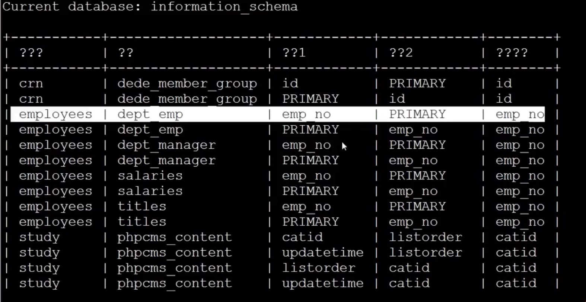
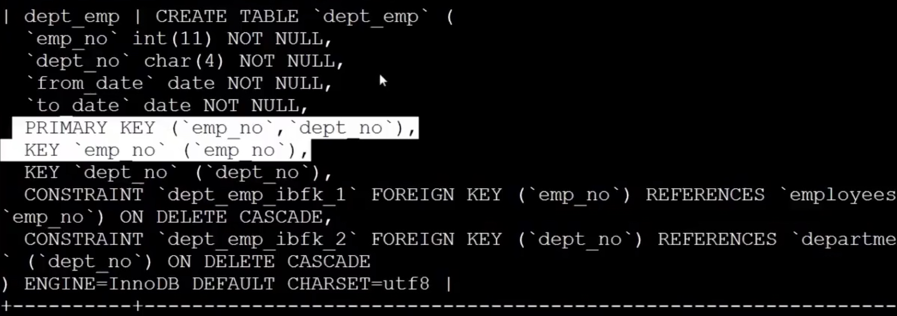
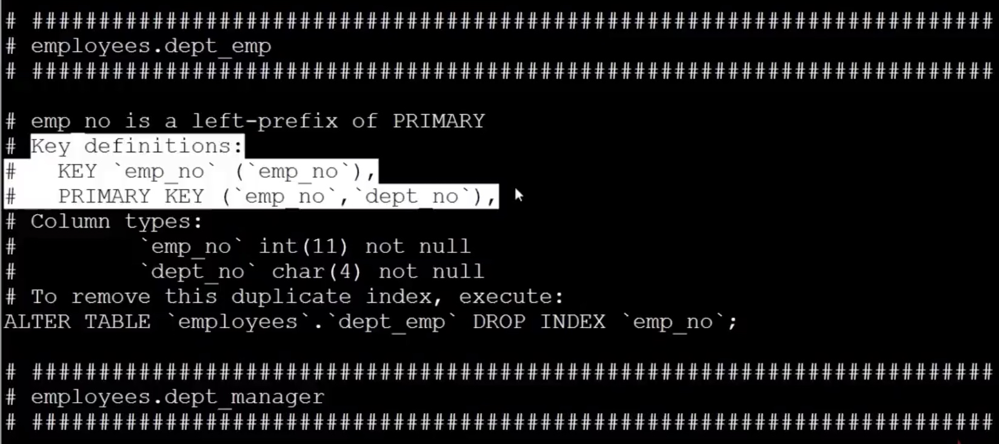

慕课网视频地址：https://www.imooc.com/learn/194
课程要点：
索引的优化
如何选择合适的列建立索引
1、在where从句、group by 从名、order by从句、on 从句出现的列；
当查询频率非常高、索引包含的列比较少的时候可以通过覆盖索引（包含了表的所有列）对这个SQL进行优化
2、索引的字段越小越好；
考虑到数据存储是以页为单位的，如果一页中存储的数据越多，一次IO便能获取的数据量就越大，这样就提高 的IO效率。
3、离散度大的列放到联合索引的前面
往往离散度越大的列的选择度就越高，放到联合索引的前面效果就会越好
root@localhost:sakila 09:55:33 >root@localhost:sakila 09:55:33 >select * from payment where staff_id = 2 and customer_id = 584;
+------------+-------------+----------+-----------+--------+---------------------+---------------------+
| payment_id | customer_id | staff_id | rental_id | amount | payment_date | last_update |
+------------+-------------+----------+-----------+--------+---------------------+---------------------+
| 15636 | 584 | 2 | 379 | 4.99 | 2005-05-27 09:25:32 | 2006-02-15 22:22:44 |
| 15639 | 584 | 2 | 1436 | 3.99 | 2005-06-15 18:35:40 | 2006-02-15 22:22:45 |
| 15640 | 584 | 2 | 3317 | 6.99 | 2005-06-21 08:22:32 | 2006-02-15 22:22:45 |
| 15641 | 584 | 2 | 3741 | 2.99 | 2005-07-06 12:00:18 | 2006-02-15 22:22:45 |
| 15642 | 584 | 2 | 3895 | 7.99 | 2005-07-06 19:04:24 | 2006-02-15 22:22:45 |
| 15645 | 584 | 2 | 6954 | 0.99 | 2005-07-26 23:55:13 | 2006-02-15 22:22:45 |
| 15649 | 584 | 2 | 8879 | 4.99 | 2005-07-30 00:16:02 | 2006-02-15 22:22:45 |
| 15650 | 584 | 2 | 9451 | 3.99 | 2005-07-30 22:10:17 | 2006-02-15 22:22:45 |
| 15652 | 584 | 2 | 10073 | 2.99 | 2005-07-31 19:53:15 | 2006-02-15 22:22:46 |
| 15654 | 584 | 2 | 10966 | 0.99 | 2005-08-02 04:00:47 | 2006-02-15 22:22:46 |
| 15656 | 584 | 2 | 11500 | 6.99 | 2005-08-16 23:01:22 | 2006-02-15 22:22:46 |
| 15657 | 584 | 2 | 12507 | 8.99 | 2005-08-18 13:19:13 | 2006-02-15 22:22:46 |
| 15658 | 584 | 2 | 12541 | 2.99 | 2005-08-18 14:18:30 | 2006-02-15 22:22:46 |
| 15659 | 584 | 2 | 12693 | 5.99 | 2005-08-18 20:10:19 | 2006-02-15 22:22:46 |
| 15661 | 584 | 2 | 14102 | 5.99 | 2005-08-21 00:35:21 | 2006-02-15 22:22:46 |
| 15662 | 584 | 2 | 14230 | 5.99 | 2005-08-21 04:57:29 | 2006-02-15 22:22:46 |
| 15663 | 584 | 2 | 14447 | 4.99 | 2005-08-21 12:12:05 | 2006-02-15 22:22:46 |
+------------+-------------+----------+-----------+--------+---------------------+---------------------+
17 rows in set (0.01 sec)
如何判断列的离散程序：
1、查看表的数据结构：
root@localhost:sakila 09:55:50 >desc payment;
+--------------+----------------------+------+-----+-------------------+-----------------------------+
| Field | Type | Null | Key | Default | Extra |
+--------------+----------------------+------+-----+-------------------+-----------------------------+
| payment_id | smallint(5) unsigned | NO | PRI | NULL | auto_increment |
| customer_id | smallint(5) unsigned | NO | MUL | NULL | |
| staff_id | tinyint(3) unsigned | NO | MUL | NULL | |
| rental_id | int(11) | YES | MUL | NULL | |
| amount | decimal(5,2) | NO | | NULL | |
| payment_date | datetime | NO | MUL | NULL | |
| last_update | timestamp | YES | | CURRENT_TIMESTAMP | on update CURRENT_TIMESTAMP |
+--------------+----------------------+------+-----+-------------------+-----------------------------+
7 rows in set (0.01 sec)
2、对列进行统计操作：（唯一值越多，离散程序就越好，可选择性就会越高）
root@localhost:sakila 10:13:01 >select count(distinct customer_id),count(distinct staff_id ) from payment;
+-----------------------------+---------------------------+
| count(distinct customer_id) | count(distinct staff_id ) |
+-----------------------------+---------------------------+
| 599 | 2 |
+-----------------------------+---------------------------+
1 row in set (0.01 sec)
由于customer_id的离散度更大，所以建索引应该使用：index(customer_id,staff_id)
索引优化的方法
通常：索引可以优化查询效率，但会降低写入效率，
不过过多的索引不但会引起写入效率也会影响查询：这是由于数据库在进行查询的时候，会选择哪一个索引进行查询，如果索引过多，就是增加分析判断的过程，这样就会导致查询效率的降低。
维护索引及优化——重复及冗余索引
1、如何找到重复和冗余的索引
重复索引：相同的列以相同的顺序建立的同类型的索引，如主键和唯一索引。
冗余索引：多个索引的前缀列相同，或是在联合索引中包含了主键的索引（因为innodb中的每一个索引都会包含主键）
#需要使用information_schema数据库中的统计报表
root@localhost:sakila 10:16:00 >use information_schema;
Reading table information for completion of table and column names
You can turn off this feature to get a quicker startup with -A
Database changed
#查找重复索引的通用语句——只能查找到索引的前缀，并不能查到哪些索引是包含主键的
root@localhost:information_schema 10:40:25 >select a.table_schema as '数据名',a.table_name as '表名',a.index_name as '索引1',b.index_name as '索引2',a.column_name as '重 复列名' from statistics a join statistics b on a.table_schema=b.table_schema and a.table_name=b.table_name and a.seq_in_index=b.seq_in_index and a.column_name = b.column_name where a.seq_in_index = 1 and a.index_name<> b.index_name;
Empty set (0.02 sec)
将查到的重复或冗余索引删除即可。


2、使用工具进行索引优化
使用pt-duplicate-key-checker 工具：检查重复和冗余索引
root@anhonglei-test-bjqw:~ # pt-duplicate-key-checker -uroot -p'Root@bd-yg2017' -h localhost
*******************************************************************
Using the default of SSL_verify_mode of SSL_VERIFY_NONE for client
is deprecated! Please set SSL_verify_mode to SSL_VERIFY_PEER
together with SSL_ca_file|SSL_ca_path for verification.
If you really don't want to verify the certificate and keep the
connection open to Man-In-The-Middle attacks please set
SSL_verify_mode explicitly to SSL_VERIFY_NONE in your application.
*******************************************************************
at /bin/pt-duplicate-key-checker line 3849.
# ########################################################################
# Summary of indexes
# ########################################################################
# Total Indexes 111

维护索引及优化——删除不用的索引
目前mysql中还没有记录索引的使用情况，但是在perconMYSQL和mariaDB中可以通过index_statistics表来查看哪些索引未使用，但在mysql中目前只能通过慢查询日志配合pt-index-usage工具来进行索引使用情况的分析。
如果一主多从的情况：如果在不同的从上负载 的业务是不一样的情况，那么在收集慢日志时要收集所有的主从服务器，并对这些进行统一的分析。
root@anhonglei-test-bjqw:~ # pt-index-usage -uroot -p'Root@bd-yg2017' /data/mysql/3306/logs/slow.log
ALTER TABLE `sakila`.`actor` DROP KEY `idx_actor_last_name`; -- type:non-unique
ALTER TABLE `sakila`.`film` DROP KEY `idx_fk_language_id`, DROP KEY `idx_fk_original_language_id`, DROP KEY `idx_title`; -- type:non-unique
ALTER TABLE `sakila`.`film_actor` DROP KEY `idx_fk_film_id`; -- type:non-unique
ALTER TABLE `sakila`.`payment` DROP KEY `fk_payment_rental`, DROP KEY `idx_fk_customer_id`, DROP KEY `idx_fk_staff_id`, DROP KEY `idx_paydate`; -- type:non-unique
ALTER TABLE `sakila`.`store` DROP KEY `idx_fk_address_id`; -- type:non-unique
root@anhonglei-test-bjqw:~ #
3. 对于本章9个节点的学习，做好总结的学习笔记。
安红雷、刘宏伟、王恩志可以给予运维环境方面的支持。
作业：
查看视频，针对以上9个学习点，形成笔记，转换PDF上传至Seafile。
注意事项：
完成学习后，修改计划完成日期为真实完成日期。